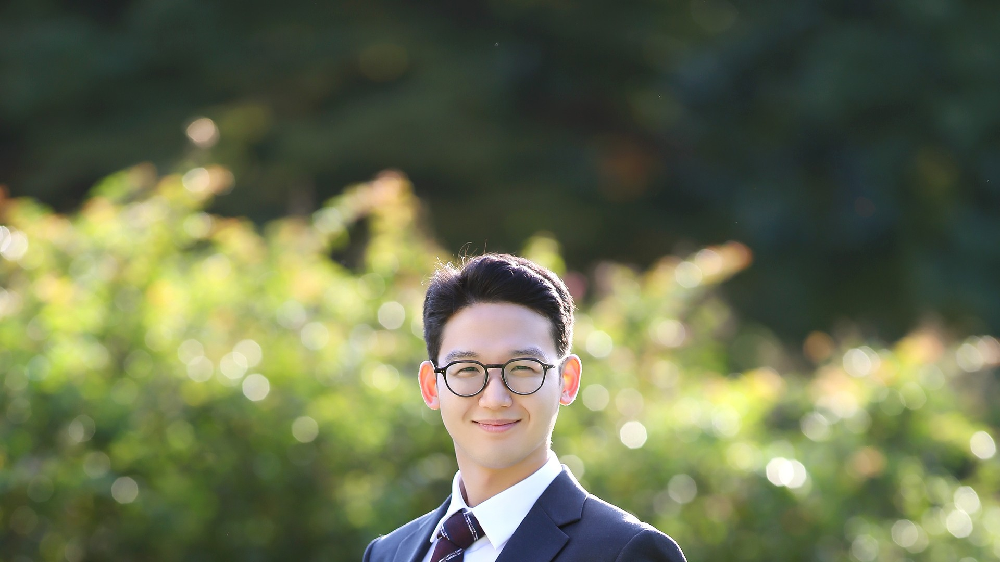

AcousTag: Batteryless 3D-Printed Acoustic Tag for Smart Speaker-based Event Monitoring
Gyuyeon Kim, Sehoon Lim, Jaewoo Son, Soundarya Ramesh, and Jun Han

Research Focus
My work develops novel applications in mobile and sensing systems by leveraging physics-based AI. I focus on perception and inference problems that connect smartphones, wearables, acoustic signals, autonomous systems, and cyber-physical environments.
Selected Work
Gyuyeon Kim, Sehoon Lim, Jaewoo Son, Soundarya Ramesh, and Jun Han
Gyuyeon Kim, Jaewoo Son, Sungmin Park, and Jun Han
Bangjie Sun, Kanav Sabharwal, Gyuyeon Kim, Mun Choon Chan, and Jun Han
Gyuyeon Kim, Jonghyuk Yun, Soundarya Ramesh, and Jun Han
Education
Korea Advanced Institute of Science and Technology. Advisor: Jun Han.
Yonsei University. Advisor: Jun Han.
Yonsei University. GPA: 4.02 / 4.3.
Experience
Cyber-Physical Systems and Security Lab, KAIST.
Cyber-Physical Systems and Security Lab, Yonsei University.
Korean Augmentation To the United States Army.
Awards
Teaching
Skills
Professional Service
External reviewer for ACM MobiSys, MobiCom, SenSys, IMWUT, HotMobile, WiSec, BuildSys, ACM/IEEE IPSN, IEEE Security and Privacy, USENIX Security, ACM UIST, IEEE IoTDI, and IEEE VT.